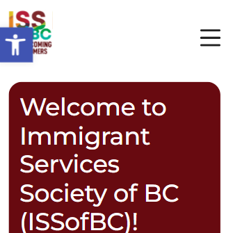

ISSofBC ↗

ISSofBC offers free employment and settlement services funded by the government to support newcomers in British Columbia. Their programs include job search assistance, resume workshops, and career coaching. They also help clients gain Canadian work experience and improve employability.